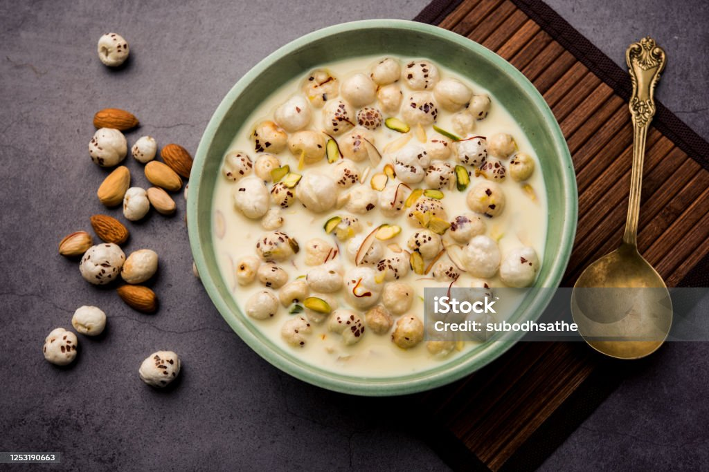

Kheer is a traditional Indian dessert made by slowly simmering rice, milk,
and sugar until it becomes rich, creamy, and flavorful. Infused with aromatic
cardamom and often garnished with almonds, cashews, pistachios, or raisins,
it is a popular sweet served during festivals, celebrations, and special
occasions. Kheer can be enjoyed either warm or chilled, making it a
comforting and timeless favorite across India.